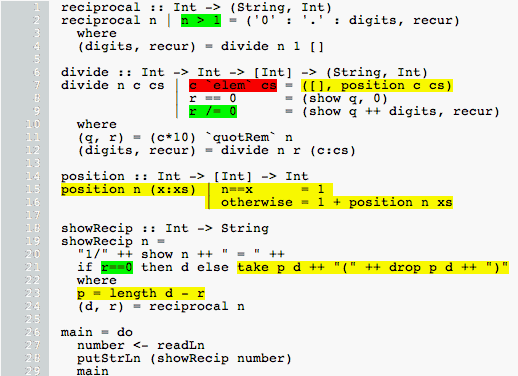

Run property tests until coverage stops increasing
What’s the context?
I like property based testing.
Your code generates a random input and then checks whether the property holds true for your code.
An example of a simple property is something like “the length of a list should be the same after sorting the list”.
What’s the question?
How many random inputs do you feed to your property and call that enough?
I asked a friend this exact question and he said “turn on Haskell program coverage and see how much of your code was executed”.

That seemed really manual, I don’t want to be the human in the loop when the computer is doing useful things for me.
I decided to come up with a way to connect the code coverage tool to the property test runner.
How did you do it?
The final idea was “keep running property tests until coverage stops increasing”.
The hpc tool creates a tree of regions for all the source in your program. When a region is executed, its execution count is increased by one.
I chose to map each of those regions to a boolean value describing how much of the program’s source has been executed.
-- | How many regions were executed at least once for this module?
tixCount :: TixModule -> Integer
tixCount (TixModule _ _ _ regions) = sum $ 1 <$ filter (> 0) regions
-- | How many regions were executed at least once for all these modules?
tixModuleCount :: Tix -> Integer
tixModuleCount (Tix ms) = sum $ map tixCount ms
-- | call out to the runtime system for region counts for all regions in all modules
examineAndCount :: ([String], Bool) -> IO Integer
examineAndCount v = unless (snd v) (error "your code is broken") >> tixModuleCount <$> examineTixThe final code is able to use QuickCheck, Hedgehog, and LeanCheck as the test runner.
I discovered that sometimes a few runs would go by without increased coverage, so the API includes “run this many tests without increased coverage”.
testUntilSameLCMany :: (Traversable t, LC.Testable a) => Int -> t a -> IO (t (Int, Maybe Integer))
testUntilSameLCMany howMany ts = do
mapM (testUntilSameLC howMany) ts
-- | LeanCheck
testUntilSameLC :: LC.Testable a => Int -> a -> IO (Int, Maybe Integer)
testUntilSameLC n testable = do
let rs = examineAndCount <$> LC.results testable
r1 <- head rs
grabUntilNSame 0 n n (tail rs) r1
grabUntilNSame :: (Monad m, Eq a) => Int -> Int -> Int -> [m a] -> a -> m (Int, Maybe a)
grabUntilNSame c _ 0 _ z = pure (c, Just z)
grabUntilNSame c _ _ [] _ = pure (c, Nothing)
grabUntilNSame c orig n (a : as) z = do
a' <- a
if a' == z
then grabUntilNSame (c + 1) orig (n - 1) as z
else grabUntilNSame (c + 1) orig orig as a'One surprise is that LeanCheck’s enumerative generator required the fewest steps to converge on maximum code coverage! QuickCheck took the longest, and Hedgehog was somewhere between the two for number of tests required to consider “enough”.
Any cool links?
Two weeks into this project I found Dan Luu’s blog post on testing, there’s way more awesome info on that post. If you enjoyed this post, go read that post next!
I did turn those ideas into another testing library that’s larger and far reaching, but that’s a different blog post.
Random tidbits?
At my previous job we used property based tests in our continuous integration pipeline, and some of my coworkers would get snippy when bugs were found that they had not added. They only wanted to know about “new” bugs, not “old” bugs.
We switched to using the same seed for the random number generator for every run, and their frustrations went away.
I wanted the best of both worlds, and after talking to a developer at hasura, he suggested that we save a “known good” seed, and whenever the tests failed on a new unknown seed, switch back to the known good seed so we could tell if this was a new or old bug.
Perhaps I’ll get around to adding explicit support for that to the Haskell property test frameworks someday? It’s a great solution!